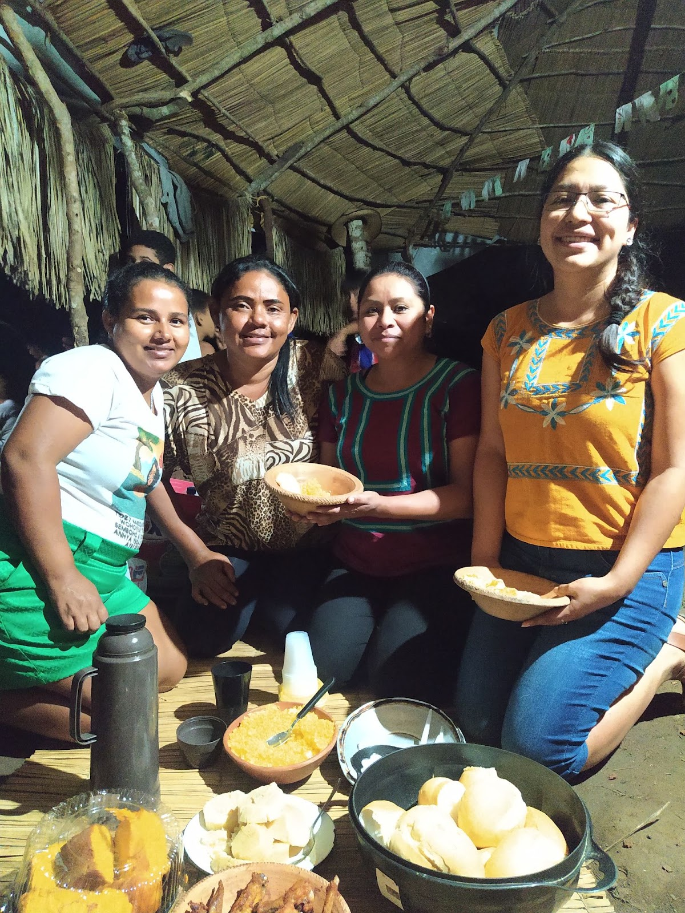

About Dying Languages
Dying Languages is a website dedicated to the topic of endangered and extinct languages around the world, designed to highlight the significance of language endangerment for those without prior linguistics experience.

Purpose
If you're reading this, chances are your mother tongue is a major world language. For those of us in this boat, it's hard to imagine what it would be like for the language we speak to slowly fade out of existence.
However, for over 40% of languages on Earth, endangerment is a very real threat.
The purpose of Dying Languages is to familiarize you with the threat of language endangerment, help you understand why it's a problem, and give you a newfound
appreciation for your own language and the languages of others.